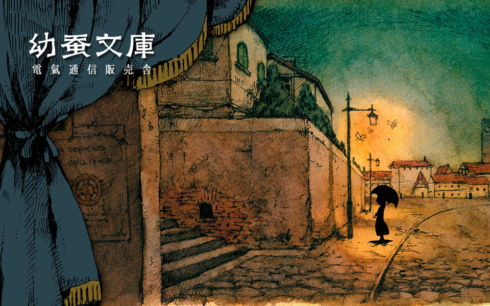

This site is a work in progress. A lot of the information present here may be inaccurate due to my limited understanding of the Japanese language and obscurity of the group.

幼蚕文庫, pronounced yousanbunko, is a doujin music project started by Kayako Chikamori, presumably on 30 Dec 2008. The project is still active with Kayako releasing music on YouTube, M3 etc.
Members include: